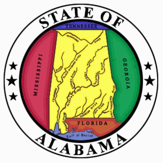

Recommendations from the Author

Recommended Resteraunts:
| Name |
Location |
Price Point |
| Black Market Bar + Grill |
Birmingham |
|
| Ocean Restaurant |
Birmingham |
|
| Central Restaurant |
Montgomery |
|
| The Cork & Cleaver |
Montgomery |
|
| Noja |
Mobile |
|
| Trellis Room |
Mobile |
|
Top Rated Activities:
- USS Alabama Battleship State Park - Mobile
- McWane Science Center - Birmingham
- The Legacy Museum - Montgomery
Local Entertainment Venues:
- WORKPLAY - Birmingham
- Alabama Music Box - Mobile
- Alley Station - Montgomery